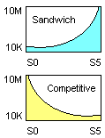

Troubleshooting - General Assay
Summary
This document describes general troubleshooting tools for assay issues and provides information regarding classifying a failure and possible cause of specific failures.
Assay Troubleshooting
- Checking results for both a sandwich and a competitive assay can help to identify the problem cause more clearly because opposite or same-direction changes in RLUs occur in the different assay formats.
- The S0 signal for some assays, hTSH and Total IgE for example, are naturally low and come close to approximating substrate blanks.
- Insufficient substrate delivery can have an unexpected effect on assay result, either high or low RLUs. Generally, signal increases as the volume of substrate decreases because of a relatively higher proportion of conjugate to a smaller overall volume of fluid. The increase continues until the volume of fluid in the RV is insufficient to reach the read level height of the luminometer, and then the signal drops off dramatically.
Use this table to identify causes for various result RLUs.
| RLUs Are: | Result: Sandwich Assay | Result: Competitive Assay | Area to Check |
|---|---|---|---|
| Zero, and zero in Event Log details. | Event Log message and suppressed results. | Event Log message and suppressed results. | Luminometer
|
| Zero, but 2 to 750 in Event Log details.
Note: System reports zero results when raw RLUs are below 750.
|
Event Log message and suppressed results | Event Log message and suppressed results. | Substrate, none dispensed, low dispense volume
No substrate dispensed, but luminometer dark counts provide some RLUs (cover open)
|
| Slightly less or same as mean substrate RLU from System Check (5000 to 9000) | IND or UNR flag | OVR flag | No reagent pack present, or no reagent pipetted
|
| Approximately equal to S0 calibrator | Low or zero result. Possible IND or UNR flag. | Higher than expected. Possible OVR flag. | No sample delivered to RV
|
| Lower than expected, depressed. | Lower than expected (low outlier). | Higher than expected (high outlier). | Partial reagent or sample delivery
Mixing or washing
Substrate
|
| RLUs Are: | Result | Areas to Check |
|---|---|---|
| Elevated |
Typical RLUs:
 |
Poor Washing
Substrate
RV
Fluidics
Sample carryover
|
| Erratic, High CVs |
|
Variable substrate volume
|
| Symptom | Causes |
|---|---|
| Assay outliers or poor CVs | Analytical Module
Peristaltic Pump or Aspiration
Sample Pipettor
Substrate
Fluidics
|
| Assay drift |
|
| Assay carryover |
|
Results Flags
This section lists result flags that indicate abnormal operation during a test.
- Refer to the DxI Operators Guide for additional flag details.
- More than one flag can be set for any given test.
- Results are suppressed when fatal flags occur.
| Flag | Description | Fatal or Non-Fatal |
|---|---|---|
| AEX | Aliquot expired. | Fatal |
| CCR | The results could not be calculated because:
|
Fatal |
| CEX | Calibration curve (or cutoff) has expired. | Not Fatal |
| CLX | Calibrator lot is expired | Not Fatal |
| CLT
Can be configured for automatic rerun. |
Obstruction was detected. | Fatal |
| CRH | Critical range high. Result is above upper limit of critical range. | Not Fatal |
| CRL | Critical range low. Result is below lower limit of critical range. | Not Fatal |
| DEX | Diluent pack expired. (Can show up as PEX on LIS transmission to host) | Not Fatal |
| EXS | Expired substrate. | Not Fatal |
| GRY | Result is within specified gray zone (qualitative assays). | Not Fatal |
| IND | Indeterminate result.
|
Fatal |
| LEX | Lot expired. Reagent pack lot used has expired. | Not Fatal |
| LOW | Result is lower than minimum reportable result defined by assay protocol. | Not Fatal |
| LRH | Result is above upper limit of LIS range. System does not send results with this flag to the LIS.
|
Not Fatal |
| LRL | Result is below lower limit of LIS range. System does not send results with this flag to the LIS.
|
Not Fatal |
| NCR | No cal curve. No calibration data existed for reagent lot when result was processed. | Fatal |
| ORH | Result is above upper limit of reference range. | Not Fatal |
| ORL | Result is below lower limit of reference range. | Not Fatal |
| OVR | Calculated concentration is above highest or most concentrated calibrator. | Not Fatal |
| PEX | Open pack stability time has elapsed for reagent pack used. Time is measured from time pack is first punctured. | Not Fatal |
| QCF | Quality control sample result has failed to meet criteria for one or more QC rules. Open QC Data screen to determine which criteria were not met. | Not Fatal |
| QEX | Quality control lot has expired. | Not Fatal |
| QNS
Can be configured for automatic rerun. |
Quantity not sufficient. Sample volume is insufficient. If this flag is obtained, no more tests are scheduled for that sample. However, tests that have been scheduled are completed. | Fatal |
| QSB
Can be configured for automatic rerun. |
Substrate dispense error. | Fatal |
| QSD
Can be configured for automatic rerun. |
Quantity of sample dispensed was deficient. | Fatal |
| QSS
Can be configured for automatic rerun. |
Quantity of sample or reagent was insufficient. | Fatal |
|
RFX |
Results is from reflex test. | Not Fatal. |
| RLU
Can be configured for automatic rerun. |
Relative light unit (RLU) is outside of acceptable luminometer analytical measuring range. | Fatal |
| SYS
Can be configured for automatic rerun. |
System error occurred during test processing. Refer to Event Log to review error. | Fatal |
| TRA | Temperature of sample wheel outside limits. | Not Fatal |
| TRI
Can be configured for automatic rerun. |
Temperature of incubator was outside acceptable limits. All tests being incubated when temperature was outside limits are flagged. | Fatal |
| TRR | Temperature reagent storage was outside acceptable limits. | Not Fatal |
| TRS
Can be configured for automatic rerun. |
Temperature of substrate was outside acceptable limits when it was dispensed. | Fatal |
| TRW
Can be configured for automatic rerun. |
Temperature of wash/read carousel was outside acceptable limits. All tests with RVs in the wash/read carousel when temperature was outside limits are flagged. | Fatal |